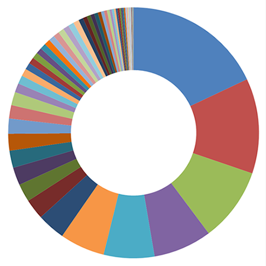

Espécies de plantas visitadas por Frieseomelitta varia (Lepeletier, 1836)

 Delonix regia (Bojer ex Hook.) Raf. Recurso: pólen e néctar
Delonix regia (Bojer ex Hook.) Raf. Recurso: pólen e néctar
Myracrodruon urundeuva Allemão Recurso: pólen e néctar
Basiloxylon brasiliensis (Allemão) K. Schum. Recurso: pólen e néctar
Ligustrum lucidum W.T. Aiton Recurso: pólen e néctar
Caesalpinia pulcherrima (L.) Sw. Recurso: néctar
Poincianella pluviosa (DC.) L.P.Queiroz. Recurso: néctar
Triumfetta rhomboidea Jacq. Recurso: pólen e néctar
Syagrus romanzoffiana (Cham.) Glassman Recurso: pólen
Eugenia brasiliensis Lam. Recurso: pólen
Outras
Archontophoenix alexandrae (F. Muell.) H. Wendl. & Drude Recurso: pólen